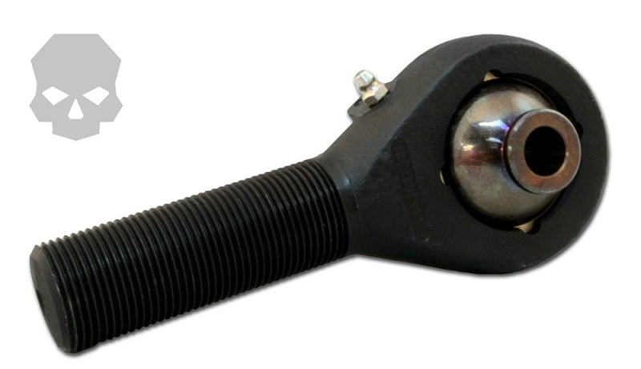

-
Anyone have a set laying around they can measure the shoulder (part that goes through the inner sleeves of the bushings) diameter?
Also the length of the inner sleeve or space between the two mounts on the rear x-member? I think I may have a few sleeves left over I can look at if I ever get near my car again.86na - BlueZ
Shiro #366 - Kouki Monster
85t - Mr Tickles -
Re: Rear Control Arm Camber and Toe Bolt Diameter
I hope my measurments are good. However I can never interpret them correctly, so I posted pictures =)
Inner Toe bracket
Inner toe bracket with a different tool
Outer toe bracket
Bolt diameter
What project you got going on :-DMy Build Thread -
Re: Rear Control Arm Camber and Toe Bolt Diameter
All your measurement tools are in 16th… so just count the number of markings/16.
Your measuring tape and caliper both measured for the toe bracket spacing~2.5625inches and ~0.5625 on the shoulder diameter.
What I am planning on doing is chopping off the bushing ends of my rear control arms and adding in an adjustable joints, thus allowing me to bring my toe back to within spec and eliminate bushing binding from an extreme drop. What I am trying to determine is if I want to use aurora end links with machined spacers, or try one of these forged end rods for off road truck suspension.
As luck has it both the 'Ballstic' and 'Jonny' Joint measure:
Bushing length: 2.625"
Bearing thru hole: 9/16"
Cost: $41.95/ea Jonny and $53.99/ea for the Ballstic
In which you get down to brass tacks your actual toe length measurement was 66.4mm~2.614"
Both these joints are forged, rebuildable and greasable.
There is also the option of using a forged end rod as well with the same dimensions as measured above.

Cost: $79.99/ea
You can also buy threaded ends to be welded into pipes… but I would rather machine out square stock to weld into the control arms rather than trying to use a round peg for a square hole. I am picking up a rear control arm and mating half of the cross member (thanks JoeZ31) to get some measurements for cutting, and how deep I can make my threaded inserts.
I leaning towards the Joint version over the Rod. Pivot movement should be to a minimum because of the way the semi trailing arm is designed and the only reason there is binding is because I am lowered. Why spend the extra 30/joint for extra movement if its not necessary.
Thanks 862sik for the prelim measurements. Its appreciated.86na - BlueZ
Shiro #366 - Kouki Monster
85t - Mr Tickles -
Re: Rear Control Arm Camber and Toe Bolt Diameter
ballistic fab is the bees knees, i've used em before and they're solid.

1988 300zxt. gt35, stance, etc. Wheels: Varrstoen ES2 18x9.5 et-13 225/40. 18x10.5 et0 245/40
1990 jetta vr6'd -
Re: Rear Control Arm Camber and Toe Bolt Diameter
lookin forward to what you do with these badass rod ends -
Re: Rear Control Arm Camber and Toe Bolt Diameter
Are you just going to modify the inner toe? Or you are also doing the outer?My Build Thread -
Re: Rear Control Arm Camber and Toe Bolt Diameter
[Topic name change]
Planning on doing both inner and outer, as you are either going to have binding in both of the joints or none at all. My only concern is that two rod end joints in the same direction will now allow more free side to side play in the control arm.
Basing my idea off this e30 setup, but can you see where my concern comes from? This may allow the control arm to pivot side to side. Granted the pivot points are pretty far apart which should keep movement to a minimum, if any. But I really wont know unitl I play with a mock-up.
If the above doesnt pan out, I do have a plan B. This would involve flipping or positioning one of the ends so that they are perpendicular. Now this would require a whole new mount fabbed onto the rear x-member. And I would use a more conventional rod end and use spacers to adjust camber.
But if it does come to plan B, I would probably buy another x-member and set of vented brake rear control arms to fab. However before I would commit to "B" I would need to do a cost benefit. At that point, it may be cheaper to sell what I currently have and go multi-link.
But before I get ahead of myself its only going to cost me a set of end rod joints to prove out plan A. Joe is being kind enough to supply me with 1/2 an x-member with mating control arm. After some measurements I will lop off the bushing ends, wedge in some wood inserts, drill a hole and press in the rod end joints. I can easily measure/see if there is any play. Probably wont happen until around the christmas time when I can get the x-member and control arm unless someone else will sell/provide one I can pick up in SC, NC, GA.86na - BlueZ
Shiro #366 - Kouki Monster
85t - Mr Tickles -
Re: Adjustable Toe and binding Reduction: Stage 1 Planning
I have a 88t subframe and 1 88 na control arm ATM. If I get to the sub swap before then, I will have another subframe and 2 more arms. Cheap, but not free, 2j's get spensive!! PM me if interested with a offer.Hmmm, Whats next?
Full Size Bronco, smashing shit.
84ZXT -
Re: Rear Control Arm Camber and Toe Bolt Diameter
adamvann3 wrote: [Topic name change]
Planning on doing both inner and outer, as you are either going to have binding in both of the joints or none at all. My only concern is that two rod end joints in the same direction will now allow more free side to side play in the control arm.
Basing my idea off this e30 setup, but can you see where my concern comes from? This may allow the control arm to pivot side to side. Granted the pivot points are pretty far apart which should keep movement to a minimum, if any. But I really wont know unitl I play with a mock-up.
If the above doesnt pan out, I do have a plan B. This would involve flipping or positioning one of the ends so that they are perpendicular. Now this would require a whole new mount fabbed onto the rear x-member. And I would use a more conventional rod end and use spacers to adjust camber.
But if it does come to plan B, I would probably buy another x-member and set of vented brake rear control arms to fab. However before I would commit to "B" I would need to do a cost benefit. At that point, it may be cheaper to sell what I currently have and go multi-link.
But before I get ahead of myself its only going to cost me a set of end rod joints to prove out plan A. Joe is being kind enough to supply me with 1/2 an x-member with mating control arm. After some measurements I will lop off the bushing ends, wedge in some wood inserts, drill a hole and press in the rod end joints. I can easily measure/see if there is any play. Probably wont happen until around the christmas time when I can get the x-member and control arm unless someone else will sell/provide one I can pick up in SC, NC, GA.
You saw the e30 setup I posted last year right? They had adjustable camber built in as well. I will see if I can dig up the link."Its the s12's sexy over weight step daughter, the z31" -
Re: Adjustable Toe and binding Reduction: Stage 1 Planning
I can't visualize how there could be side to side movement if the rod ends and spacers have a tight fit
edit: nvm
-
Re: Rear Control Arm Camber and Toe Bolt Diameter
Not sure, but my guess is Jake Larsen's DTM setup: http://www.s14.net/jakesdtmtours/suspension.htmlnismopu wrote:
You saw the e30 setup I posted last year right? They had adjustable camber built in as well. I will see if I can dig up the link.
Also some good e30 enough here: http://forums.bimmerforums.com/forum/sh … ?t=1344968
and here: http://www.bigcoupe.com/phpBB2/viewtopi … 7f4624bea3
It's all a little more intense than I am willing to go with the semi trailing. Plan A will be my last full efforts with the semi trailing. After that it would be just be beneficial to cross into the multi link land. I am not giving up hope yet. Each step forward and can almost taste victory. The fact that these joints are dimensionally right on.... is a good sign.86na - BlueZ
Shiro #366 - Kouki Monster
85t - Mr Tickles -
Re: Adjustable Toe and binding Reduction: Stage 1 Planning
Not axial, but pivot. Hopefully the pivot points are far enough out, and at slight enough opposed angles there will be none.sprtcrazy17 wrote: I can't visualize how there could be side to side movement if the rod ends and spacers have a tight fit
edit: nvm86na - BlueZ
Shiro #366 - Kouki Monster
85t - Mr Tickles -
Re: Adjustable Toe and binding Reduction: Stage 1 Planning
If you are thinking it may pivot, then either put spacers on the side, which should be more than enough (you can use the factory sleeves cut) or re-weld the tabs on the crossmember to me not as wide.
May the force be with you :lol:My Build Thread -
Re: Adjustable Toe and binding Reduction: Stage 1 Planning
Sounds like a solid plan adam, i remember talking to you about doing this way before i did my multilink swap. Keep up the good work man!Sbsperformance-cylinder head service and porting specialist. Shoot me a pm for porting specials and now offering a low low price for intake manifold porting! Now offering ceramic and thermal dispersant coating! -
Re: Rear Control Arm Camber and Toe Bolt Diameter
[quote]adamvann3 wrote:That's the one! Never seen the bimmer forums one, decent execution it just lacks alot in the quality of hardware he chose. Also, can't figure out why he used square tube......Originally posted by nismopu"Its the s12's sexy over weight step daughter, the z31"

Copyright © 2006–. All rights reserved. Privacy Policy